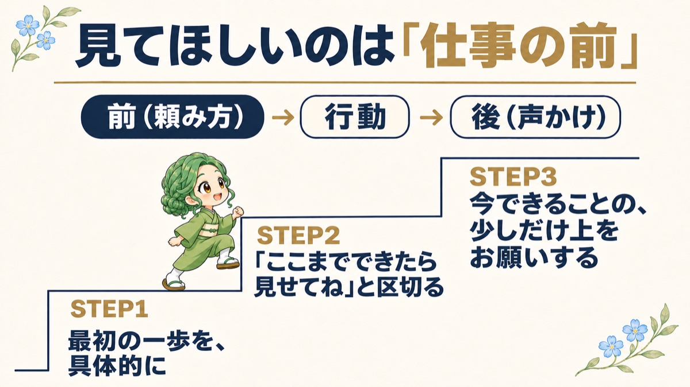

第1回のテーマは、職場で人を育てている方から、いちばんよく聞くお悩みです。
「頼んだ仕事が、なかなか進まない」
頼んでいた仕事が進んでいなかったとき、
「どうして、まだやってないの？」
と聞いてしまったこと、ありませんか？
責めるつもりはなくて、ただ理由を知りたいだけ。
でも、この「どうして？」は、多くの場合、逆効果になります。
聞かれた側は、理由を説明しようとして、言いわけを探します。
そして、「その仕事」と「いやな気持ち」がセットで記憶されてしまいます。
行動分析学では、行動のあとに「いやなこと」が起きると、その行動は減りやすくなると考えます。
その仕事の話になると、いやな気持ちになる。
そうなると、仕事そのものから、だんだん遠ざかってしまうんです。

仕事が進まない理由は、やる気ではなく、仕事を始める「前」にあることが多いです。
こうした「始めにくさ」があると、人はなかなか動けません。
なので、まず見直したいのは、仕事の頼み方です。
もうひとつ、タイプによって「始めにくさ」の場所がちがいます。
プレゼントのシートの「頼むとき」の欄も、あわせて見てみてくださいね。
▶ プレゼントのシートを開く
次に、頼んだ仕事を持ってきてくれた部下・後輩がいたら、
中身を見る前に、まず「やってくれてありがとう」とひと言伝えてみてください。
直してほしいところを伝えるのは、そのあとで1つだけ。
これだけで、「次も持っていこう」と思える人が、少しずつ増えていきます。
「うちの職場の、こういう場合はどうしたら？」というご質問があれば、メルマガのメールに、そのまま返信してくださいね。
それでは、今週もいってらっしゃい。
さつき｜育成ラボ
人材育成専門の公認心理師